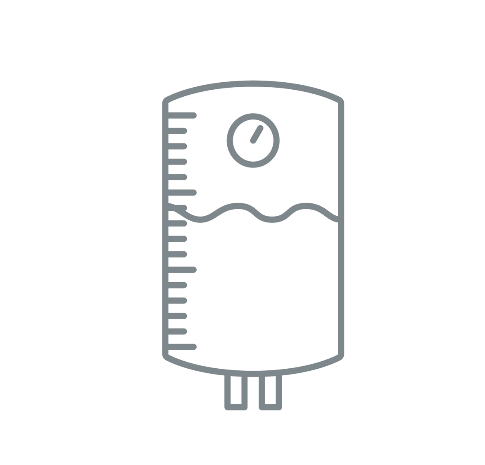

The experiments are ran by the TI mmWave team to verify a variety of general use-cases and test mmWave sensors’ capability to sense objects under different environments. Each experiment contains explanation and methodology to help you understand the testing conditions and recreate the experiment yourself.
6
Experiments
Labs
16
Labs
The labs are source code examples on how to get started with the mmWave sensors. Each lab provides detailed instructions to follow along while evaluating. Source code of each lab can be loaded directly into Code Composer Studio through the integrated view in TI Resource Explorer.
Chirp Database
The chirp database is an easy-to-search repository of different mmWave RF front-end configurations that the TI mmWave team has calculated for our demos and experiments. These chirp designs are available for you to get started designing quickly and can be loaded directly into mmWave Sensing Estimator.
9
Chirps
Featured Content
Learn more!

Fluid Level Transmitter
Use TI's high-accuracy range algorithm to measure the volume of liquid in a tank.
Works with IWR1443 EVM
Learn more!
People Counting
Use TI mmWave sensor to track and count multiple people simultaneously.
Works with IWR1642 EVM
Learn more!
Autonomous Robotics
Use TI mmWave sensor to be used with popular mapping and navigation libraries in the Robot Operating System (ROS) environment.
Works with IWR1443 EVM
Learn more about twirl gesture!
Learn more about swipe gesture!
Gesture Control
Use TI mmWave sensor unique capability to measure range, velocity, and angle data to detect natural gestures.